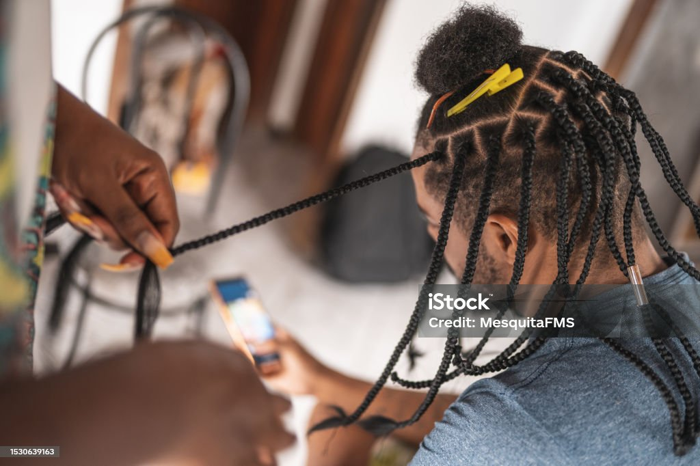
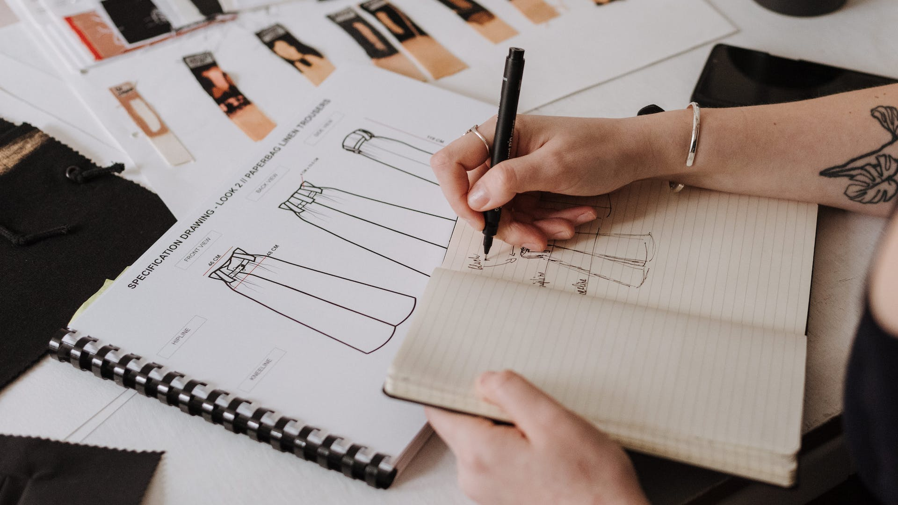
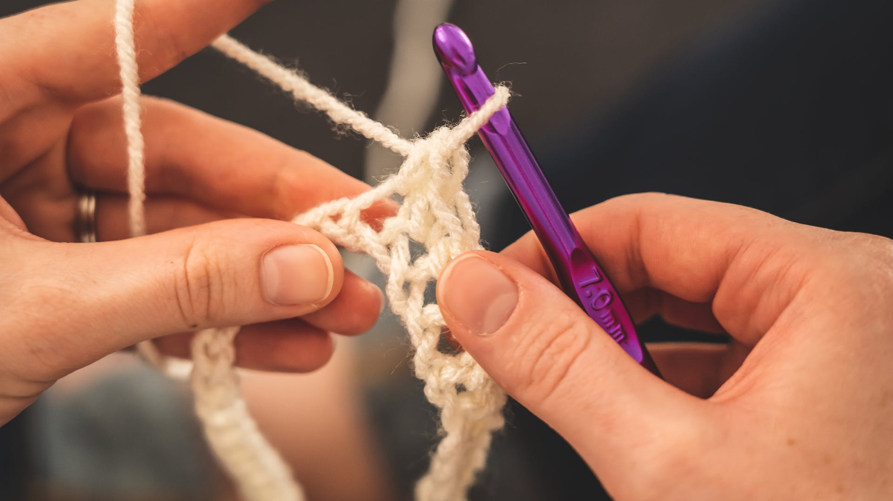
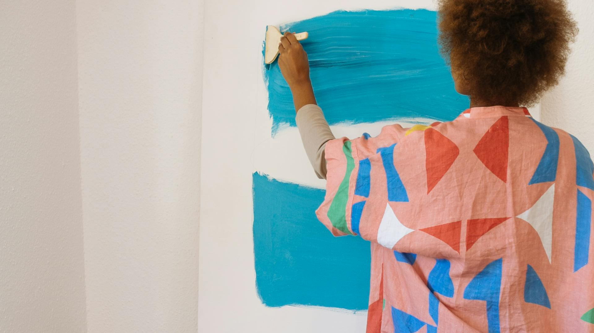
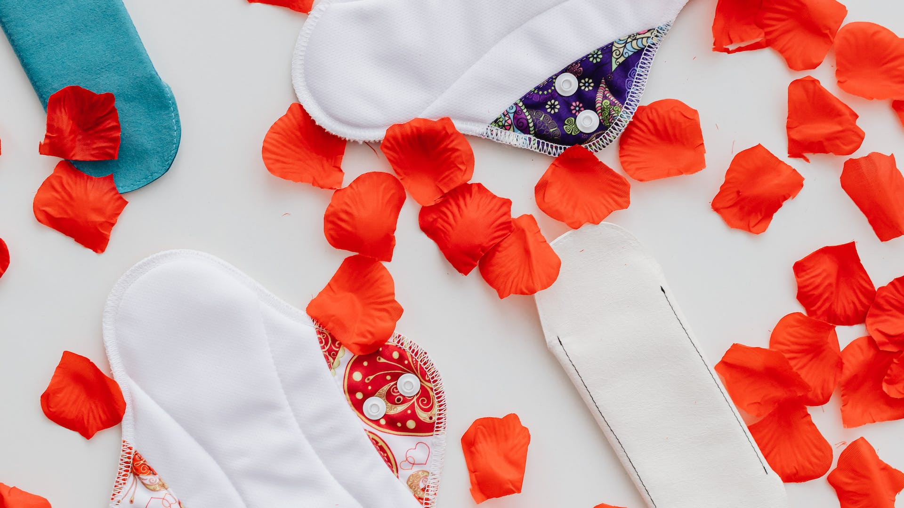

Empowerment through Life Skills: Unleashing Your Potential
Welcome to a world of self-sufficiency and empowerment! In this file, we embark on a journey that celebrates the art of acquiring life skills beyond traditional education. These skills, encompassing braiding, sewing, crocheting, painting, and various other crafts, are not just hobbies; they are pathways to personal development, independence, and a better quality of life
Embracing Life skills
Discover new skills that don't need school or lots of money. You can learn these skills on your own, making your life better. Let's explore:
The art of braiding
Not only is it a convenient hairstyle, but it serves as a protective style that will help your natural hair grow faster. It is in this way that you can embrace this skill because everytime people will have hair, and they will always need it. plus it can be done by both Genders and it really help people in making money and looking good.

A man being Braided in his hair few ways to start doing it:
Youtbe ibyerekana neza uko bikurikirana ukaba wabasha kubyikorera nawe
Aha hari video ya youtube yagufasha
The art of Sewing
Being able to sew enables us to make the most out of existing items that need minor repairs for a longer life span. Sewing is a skill which can help us feel more creative. It can be more budget friendly than buying something new, which has a better impact on the environment.

sewing picture
Before sewing anything, you must first design by drowing and knowing measures you will follow
How satisfying it is to sit back and look upon the blanket, the scarf, the hat, the home decor you have made with yarn, a hook, and your hands. Sometimes it’s hard to believe that we are able to turn a ball of string into something functional that will keep us warm or bring us comfort(Moore, 2018).

crocheting
Some steps to start crocheting
Make sure you have the right yarn
Hold crochet hook in right hand and make a slip knot on hook.
Bring yarn over hook from back to front and grab it with hook.
Draw hooked yarn through slip knot and onto hook. This makes one chain stitch.
Repeat Steps 2 and 3 in sequence 28 more times. You should have 29 chain stitches and one loop will remain on hook
skip the first chain stitch and insert the hook into the center of next chain stich, continue all the steps
Actually there are many skills one can study that can transofrm lives of many, so what we do is standup and go find what best fits you or what you do best, be courageous and try new things will go in place.

Painting

you can do reusable pads
Benefits of Life skills
It helps develop eye/hand coordination, concentration, reasoning and mathematical skills, and of course pride and confidence in a finished product.
we see Life skills benefits in everyday's life. it helps us develop economically and develop intellectually
Conclusion
To sum up, the path to empowerment via life skills represents more than just learning new trades or pastimes; it's a doorway to self-improvement and independence. These abilities span a wide range of crafts, including painting, crocheting, sewing, and braiding, and they provide doors to greater freedom and a better quality of life.
Learning how to sew, crochet, braid, and do other crafts enables people to become independent without being restricted by a set curriculum or budget. For example, braiding not only helps with hairstyling but also provides a means of income and increases self-esteem. Sewing is more than just fixing things; it's a way to be creative and environmentally conscious by reusing things.
Using yarn and hooks to create useful products gives crocheting a special feeling of fulfillment. Furthermore, the encouragement to practice these talents on a personal level or through online courses shows how inclusive and accessible these empowering skills are.
Life skills are more important than craftsmanship. It develops one's mental faculties, encourages creativity, and instills confidence and pride in one's accomplishments. These abilities are not only useful, but they also lay the groundwork for both intellectual and economic advancement.
In the end, developing and utilizing these life skills is the key to realizing one's potential. They encourage sustainable living, provide people the power to control their own destiny, and have a positive impact on both individual and societal well-being. People who adopt these abilities can enter a world where empowerment, inventiveness, and self-sufficiency coexist with confidence.
CONTACT US